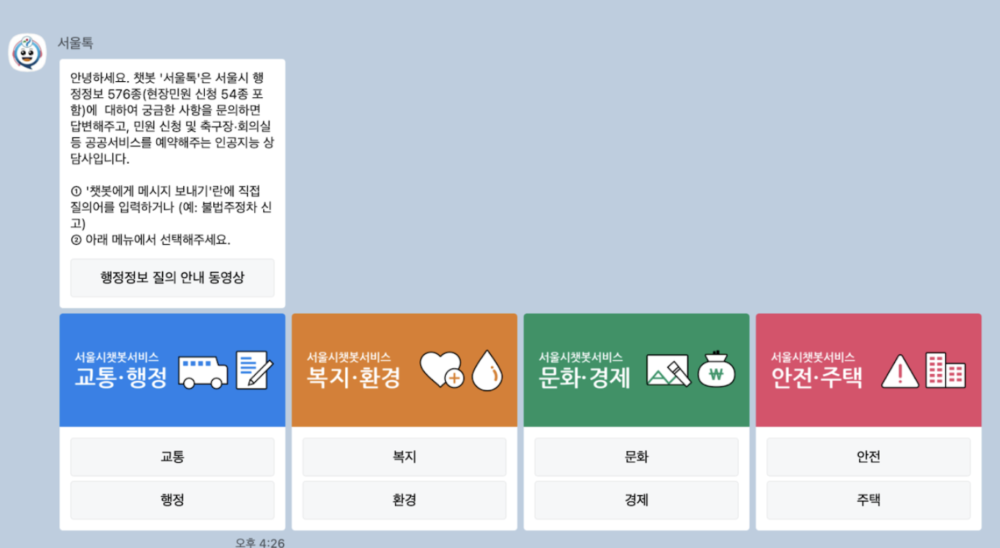
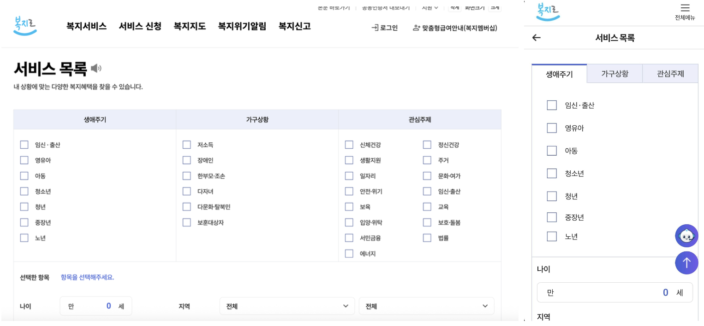
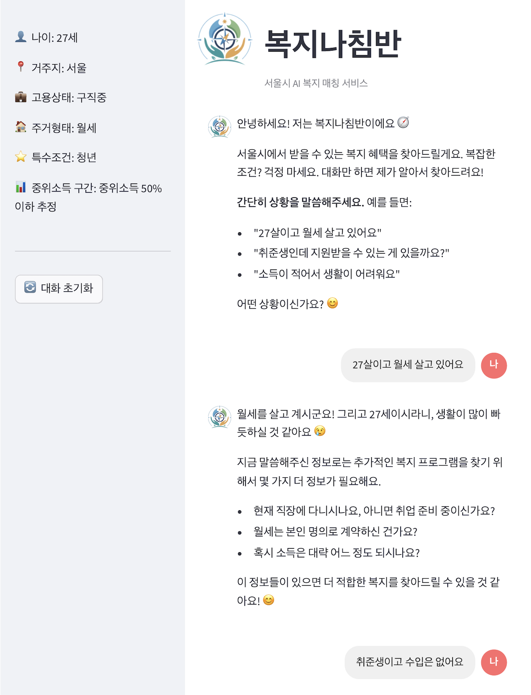
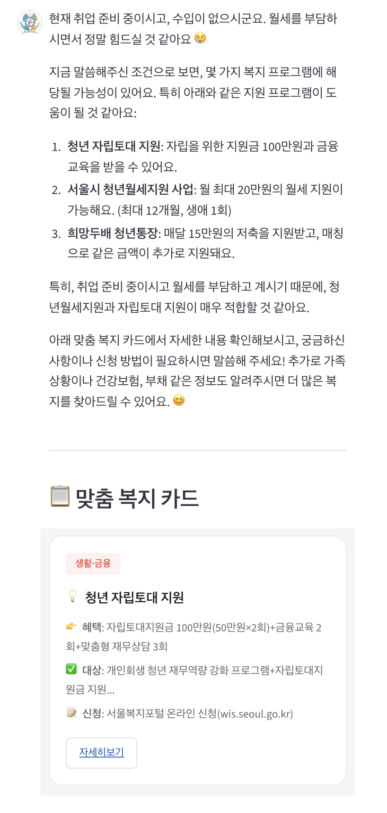
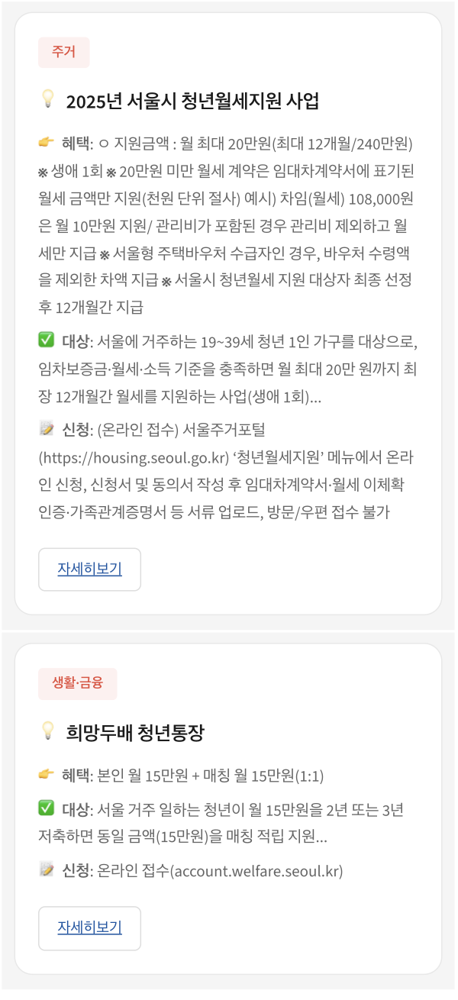
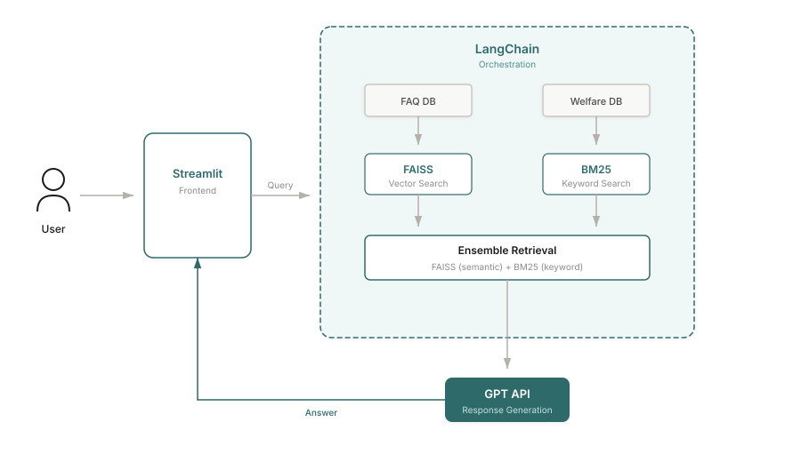
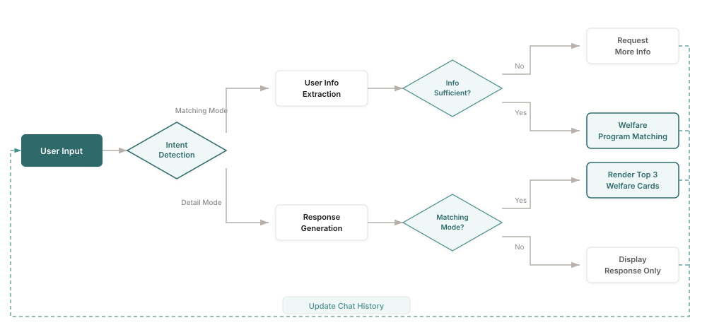
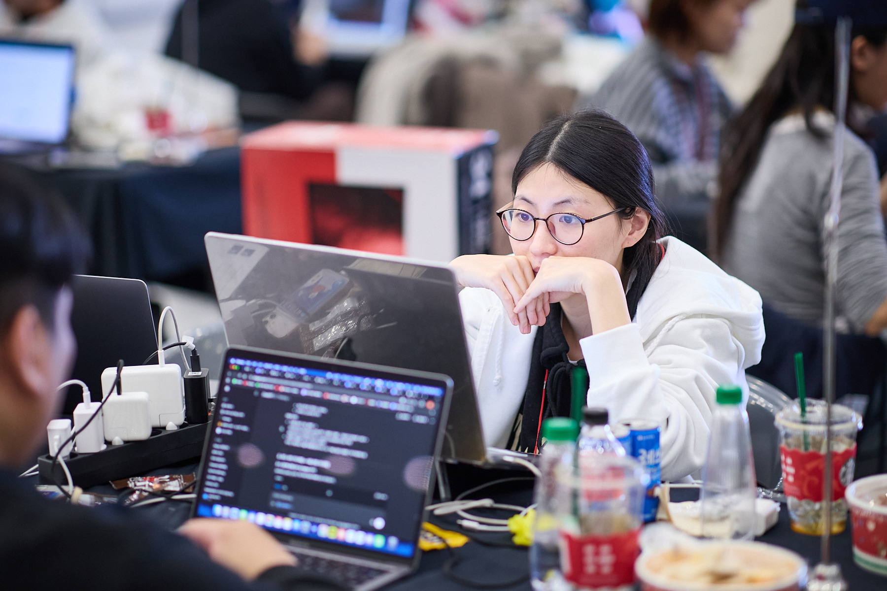

Seoul offers over 300 welfare programs for its citizens, yet a significant portion of eligible residents never receive the benefits they qualify for. The information is scattered across multiple platforms, buried in complex eligibility criteria, and written in bureaucratic language that's difficult to parse.
Welfare Compass
A conversational AI agent that helps Seoul citizens discover welfare benefits they're eligible for through natural dialogue.
The Problem
86%
give up thinking "I'm probably not eligible"
Seoul Welfare Survey, 2020
48%
of eligible citizens don't receive benefits
National Indicators, MOHW 2024
300+
Seoul welfare programs across multiple platforms
Seoul Open Data Portal
Existing Solutions Fall Short
Platforms like Seoul Talk and Bokjiro simply list links without automatic condition matching. Users must manually check each policy's requirements.
Information Overload
With 300+ policies, each with complex eligibility criteria involving age, income, employment status, and residency requirements, citizens face decision paralysis.

Seoul Talk — KakaoTalk chatbot, category selection → link click, no automatic condition matching

Bokjiro — government welfare portal, checkbox filtering, users must judge their own eligibility
van Oorschot's welfare non-take-up model identifies the first barrier as self-censorship — 86% of Seoul residents didn't apply because they assumed they weren't eligible. Welfare Compass targets this threshold stage.
User Discovery
Before building anything, I conducted informal interviews with ~8 peers in my bootcamp cohort — all Seoul residents in their late 20s, the exact demographic eligible for youth welfare programs.
Most had never applied for welfare benefits. The reasons clustered around three patterns:
Informal interviews · n ≈ 8 · Bootcamp cohort, late-20s, Seoul residents
Yujin, 27
"I figured welfare was for low-income families. I never thought someone like me could qualify for anything."
Finding
"I didn't know I was eligible"
Participants assumed welfare programs were for low-income households only, unaware that Seoul offers 300+ welfare programs, many of which target young adults.
Design Decision
Proactive matching
Users don't know what they qualify for, so the system extracts context through conversation and matches programs automatically — no prior knowledge required.
Finding
"I tried searching but gave up"
Those who did search found information scattered across Seoul Talk, Bokjiro, and district office websites with no unified entry point. Most gave up within minutes.
Design Decision
Unified retrieval
Instead of sending users across multiple platforms, we consolidated ~100 curated programs into a single searchable database with ensemble retrieval (FAISS + BM25).
Finding
"It's not worth the hassle"
Even when participants found a potentially relevant program, complex eligibility criteria and lengthy application forms made the expected effort feel disproportionate to the uncertain benefit.
Design Decision
Zero-effort interaction
Instead of forms and filters, users describe their situation in natural language. The system handles eligibility matching and shows benefit details before any application commitment.
These findings converged on one insight: the barrier isn't information availability — it's the effort required to find and process it. This led us to choose a conversational interface that shifts the burden from user to system.
Solution Overview
Welfare Compass is a conversational AI agent that extracts user profile information through natural dialogue and matches it against a manually curated welfare policy database using RAG (Retrieval-Augmented Generation). For the hackathon, we curated ~100 Seoul welfare programs covering housing, employment, living expenses, and education.
Instead of requiring users to fill out forms or navigate complex menus, they simply describe their situation: "I'm a 28-year-old freelancer living in Gangnam, looking for housing support." The system automatically extracts relevant attributes and finds matching welfare programs.

01 — Natural language input with auto-extracted user profile

02 — Personalized recommendations with welfare program cards

03 — Follow-up Q&A: eligibility check & application guide
System Architecture
I designed a RAG-based pipeline using LangChain for orchestration. The key insight was that welfare policies are frequently updated, so we needed a system that could incorporate changes through document updates alone — without model retraining.

System Architecture: User query flows through Streamlit to the retrieval pipeline, which orchestrates intent detection, ensemble retrieval (FAISS + BM25), and GPT response generation.

Conversation Flow: The system detects user intent, extracts profile information through dialogue, and matches against welfare eligibility criteria.
Tech Stack
Python
LangChain
FAISS
BM25
GPT API
Streamlit
Key Challenges & Solutions
Challenge
Low retrieval accuracy with vector search alone
Initial tests showed that semantic search (FAISS) missed relevant policies when user queries used different terminology than the policy documents.
Solution
Ensemble retrieval with BM25
A teammate contributed a BM25 keyword matching module to complement the FAISS vector search. This hybrid ensemble approach captured both semantic meaning and exact keyword matches, significantly improving retrieval accuracy.
Challenge
Inconsistent and hard-to-understand responses
Early feedback indicated that responses lacked consistency and used technical welfare terminology that users couldn't understand.
Solution
Iterative prompt engineering
Redesigned prompts to ensure responses were grounded only in retrieved documents. Experimented extensively with converting bureaucratic language to everyday expressions. Tested against real user question patterns to refine response quality.
Challenge
Team alignment under time pressure
After advancing to finals, team members wanted to build out backend/frontend infrastructure. With limited time remaining, this risked delivering an incomplete product.
Solution
MVP-first approach with clear prioritization
Advocated for "working MVP over perfect architecture." Built Streamlit-based prototype overnight, demonstrated its viability to the team, and aligned everyone around completing a functional product rather than an ambitious but incomplete system.
Results & Feedback

2025 SeSAC Hackathon Finals — Development session, Day 1
Good topic and planning — this seems like something citizens could actually use right away.
— Hackathon Judge Panel
The project advanced to the finals, placing in the top 20 among 181 competing teams. Beyond the competition result, the judges specifically noted the practical applicability of the service and its potential for real-world impact.
Reflection & Learnings
- User context matters more than technical sophistication. Understanding why people give up on welfare searches (complexity, self-doubt about eligibility) shaped every design decision.
- Constraints force clarity. The tight hackathon timeline forced us to identify what truly mattered: a working system that could demonstrate the core value proposition.
- RAG is powerful for frequently-updated domains. Welfare policies change constantly. Choosing RAG over fine-tuning meant we could incorporate policy updates through simple document refresh.
- Hybrid retrieval outperforms single approaches. Combining semantic search with keyword matching addressed the vocabulary mismatch between user queries and policy documents.
- Testing with proxy users has limits. Our interviewees were digitally fluent bootcamp peers — real welfare applicants likely face different barriers around language complexity, trust, and digital literacy.
What's Next
The hackathon MVP validated the core concept, but there's significant room for improvement in both the technical system and the research approach:
- Usability testing with real welfare applicants — partnering with community centers or welfare offices to observe how actual target users interact with the system, especially those with lower digital literacy.
- Retrieval optimization — evaluating chunking strategies, reranking models, and hybrid retrieval configurations to improve answer accuracy and reduce hallucination on edge-case queries. → Partially addressed in v2: BM25 + Dense + BGE reranker hybrid pipeline.
- ✓ Production-ready architecture — migrating from Streamlit to a Django + React stack, expanding coverage from Seoul youth to all citizens, and integrating real-time eligibility verification with welfare service APIs. → See v2